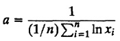
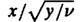
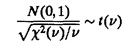
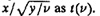

| Previous | Table of Contents | Next |
The Pareto CDF is a power curve that can be easily fit to observed data. The key characteristics of Pareto distribution are summarized in Table 29.13.
Pareto distribution is useful to fit a distribution to observed data. Given a sample of n observations {x1, x2,..., xn}, the maximum likelihood estimate of the parameter a is

The inverse transformation method is the easiest way to generate Pareto variates. Generate u ~ U(0, 1) and return 1/u1/a.
The Pascal distribution is an extension of the geometric distribution. In a sequence of Bernoulli trials, the number of trials up to and including the mth success has a Pascal distribution. The key characteristics of the Pascal distribution are summarized in Table 29.14.
The Pascal distribution is used to model the number of attempts to get a certain number of successes; for example:
TABLE 29.14 Pascal Distribution Pascal (p,m)
The attempts must be independent and identical as explained under “Bernoulli Distribution” in Section 29.1.
To generate Pascal variates, generate m geometric variates G(p) and return their sum as Pascal(p,m).
The Poisson distribution is a limiting form of the binomial distribution, and it is used extensively in queueing models. The key characteristics of Poisson distribution are summarized in Table 29.15.
TABLE 29.15 Poisson Distribution Poisson(λ)
The Poisson distribution is used to model the number of arrivals over a given interval; for example:
The Poisson distribution is particularly appropriate if the arrivals are from a large number of independent sources. Such arrival processes are also called Poisson processes and are discussed further in Chapter 30 on queueing theory.
See Section 29.3 for choosing among binomial, negative binomial, and Poisson distributions based on the relative magnitude of mean and variance.
Poisson variates can be generated as follows:
This distribution was derived by W. S. Gosset (1876–1937), a statistician for a winery whose owner did not appreciate his publishing. Gosset, therefore, published his paper under the pseudonym Student. The symbol t was used to denote the variable and hence the name “Student’s t distribution.” The key characteristics of the t distribution are summarized in Table 29.16. If x ~ N(0, 1) is a unit normal variate and y ~ X2(v) is a chi-square variate, the ratio  has a t distribution with v degrees of freedom:

The pdf of a t-variate is very similar to that of a unit normal. The distribution is bell shaped and is symmetrical about zero. For large degrees of freedom (v > 30), a t distribution can be approximated by a unit normal.
The t distribution is used whenever a ratio of a normal variate and the square root of a chi-square variable is involved and is commonly used in setting confidence intervals and in t-tests as discussed in Chapter 13.
The t-variates can be generated using characterization as follows. Generate x ~ N(0,1) and y ~ X2(v) and return 
TAKE 29.16 Student’s t-Distribution t(v)
This is one of the simplest distributions to use. The key characteristics of the uniform distribution are summarized in Table 29.17.
A uniform distribution is commonly used if a random variable is bounded and no further information is available; for example:
TABLE 29.17 Uniform Distribution (Continuous) U (a,b)
To generate U(a,b), generate u ~ U(0, 1) and return a + (b – a)u.
This is a discrete version of the uniform distribution. It takes a finite number of values, each with the same probability. The key characteristics of this distribution are summarized in Table 29.18.
The discrete uniform distribution is used when it is believed that the value is equally likely over a bounded interval; for example:
To generate UD(m,n), generate u ~ U(0, 1), return [m + (n – m + 1)u].
TABLE 29.18 Uniform Distribution (Discrete) UD(m,n)
The Weibull distribution is commonly used in reliability analysis. The key characteristics of a Weibull distribution are summarized in Table 29.19. If b = 3.602, the Weibull distribution is close to a normal. For b > 3.602, it has a long left tail. For b < 3.602, it has a long right tail. For b ≤ 1, the Weibull pdf is L shaped, and for b > 1, it is bell shaped. For large b, the Weibull pdf has a sharp peak at the mode.
The Weibull distribution is used to model lifetimes of components. For b < 1, the Weibull distribution gives a failure rate increasing with time. For b > 1, the failure rate decreases with time. At b = 1, the failure rate is constant and the lifetimes are exponentially distributed.
The inverse transformation technique can be used to generate Weibull variates. Generate u ~ U(0, 1) and return a(ln u)1/b as Weibull(a,b).
TABLE 29.19 Weibull Distribution Weibull (a,b)
| Previous | Table of Contents | Next |